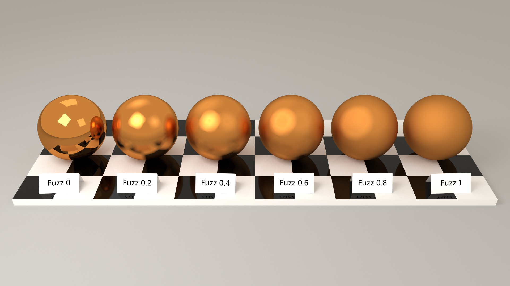
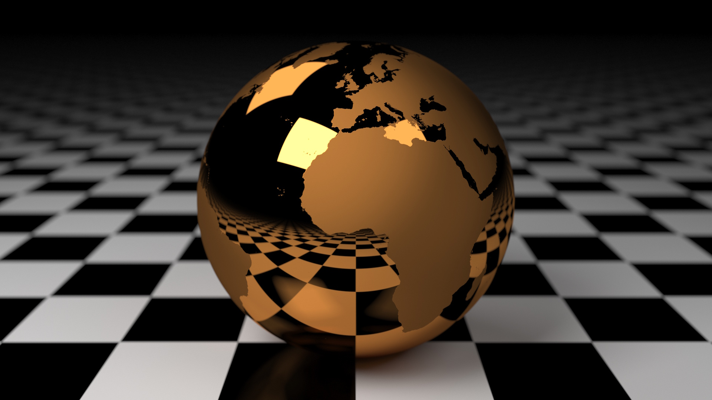
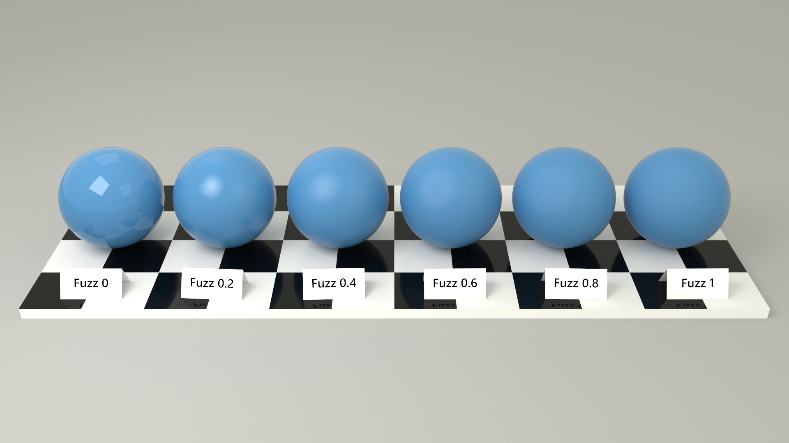
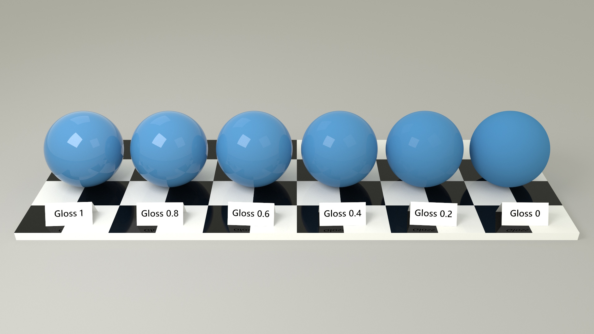
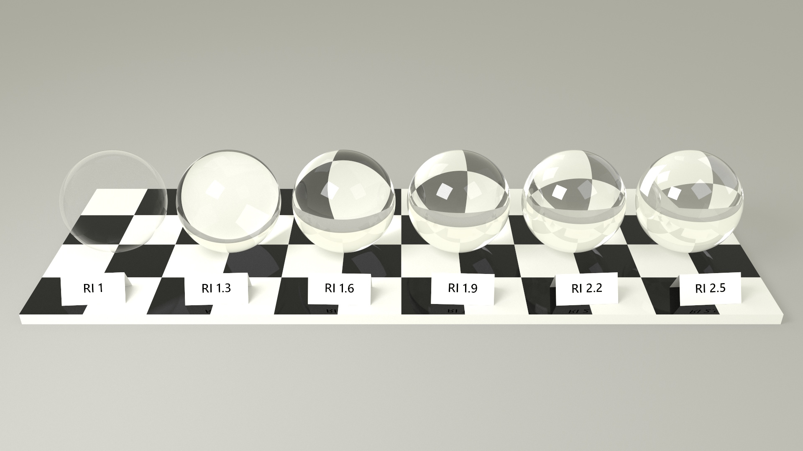
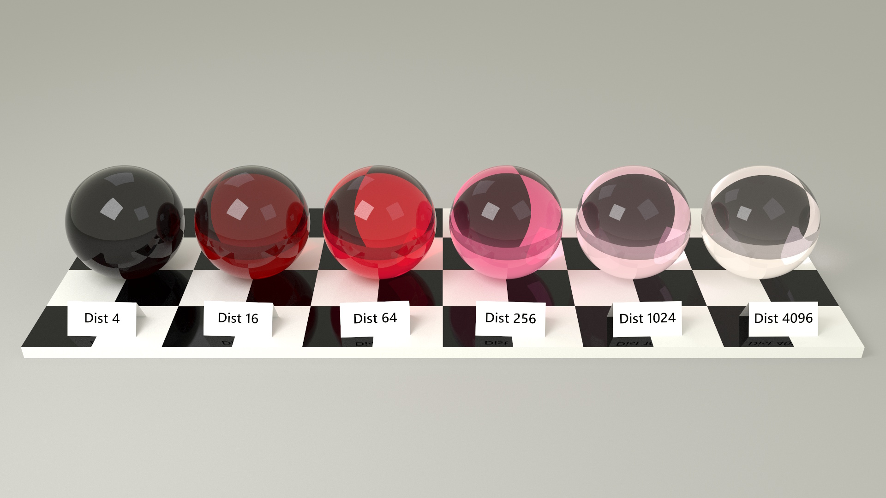
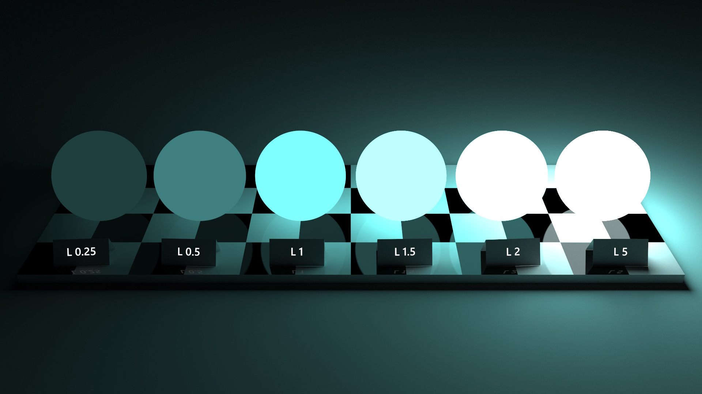

Materials control how marks interact with light.
Each mark can specify a material type and a set of properties that affect its appearance.
The material is set at the mark level using the material property, and individual properties are set in
the mark's encoding.
| Type | Description |
|---|---|
diffuse |
Default material, scatters light equally in all directions. |
metal |
Reflects light, with the reflected color tinted by the fill color. |
glossy |
Combines diffuse and specular reflection. |
glass |
Refracts light. |
light |
Emits light from the surface. |
The following properties can be set in a mark's encoding to control the material appearance. All properties are optional.
| Property | Type | Default | Description |
|---|---|---|---|
fill |
color | SteelBlue* |
The base color of the surface. Can be a color or an image texture. |
fuzz |
number | 0 |
Surface roughness for metal, glossy, and glass materials.
0 is a perfect mirror, 1 is fully matte.
|
gloss |
number | 1 |
Specular reflection intensity for glossy materials.
0 is fully diffuse, 1 is perfect specular.
|
refractiveIndex |
number | 1.5 |
Index of refraction for glass and glossy materials.
Examples include a vacuum 1.0, ice 1.31, water 1.333, fused quartz
1.46, glass 1.5-1.6, sapphire 1.77 and diamond 2.42.
|
fillDistance |
number | max(w, h, d) |
Distance at which the glass tint matches the fill color. |
*Glass defaults to clear (no tint) when fill is not specified.
The default material. Diffuse materials scatter light equally in all directions, producing a matte appearance.
Metal materials reflect light, with the reflected color tinted by the fill color.
{
"type": "rect",
"geometry": "sphere",
"material": "metal",
"encode": {
"enter": {
"width": {"value": 100},
"fuzz": {"value": 0},
"fill": {"value": "gold"}
}
}
}
The fuzz property controls roughness — from a perfect mirror (0) to fully matte
(1).

The fuzz property can also be driven by an image texture.

Glossy materials combine diffuse and specular reflection, producing a plastic or lacquered appearance.
{
"type": "rect",
"geometry": "sphere",
"material": "glossy",
"encode": {
"enter": {
"width": {"value": 100},
"fuzz": {"value": 0},
"gloss": {"value": 1}
}
}
}
The fuzz property controls roughness.

The gloss property controls the intensity of specular reflection.

Glass materials refract light passing through them.
{
"type": "rect",
"geometry": "sphere",
"material": "glass",
"encode": {
"enter": {
"width": {"value": 100},
"refractiveIndex": {"value": 1.5}
}
}
}
The refractiveIndex controls how much light bends.

The appearance of colored glass depends on how far light travels through the material.
The fill color represents the tint of the glass as seen when white light passes through a thickness
equal to fillDistance.
Thinner sections appear lighter, while thicker sections appear darker.
To match the fill color along a particular mark dimension, set fillDistance to the size of
the mark along that dimension.
If fillDistance is not specified, the value is automatically set to the maximum mark dimension.
Note that fillDistance replaces the deprecated density property (fillDistance
equates to the reciprocal of density).
If both properties are specified, fillDistance takes precedence.

Emissive materials emit light from the surface.
{
"type": "rect",
"geometry": "sphere",
"material": "light",
"encode": {
"enter": {
"width": {"value": 100},
"fill": {
"color": {
"h": {"value": 180},
"s": {"value": 0.5},
"l": {"value": 1}
}
}
}
}
}
The fill color determines the color of the emitted light.
